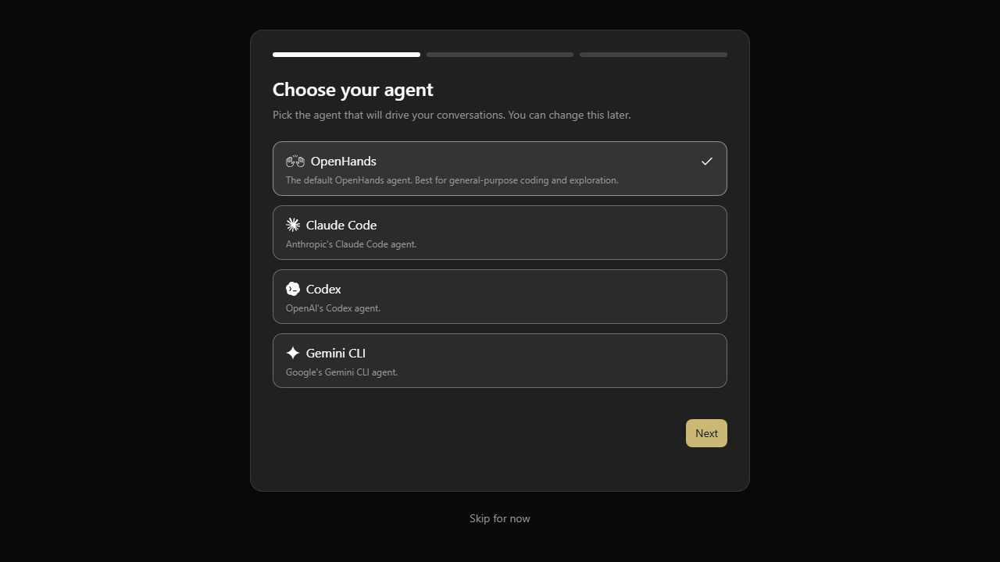

Coding workspace · interactive UI preview
OpenHands
Agent Canvas interface for coding tasks and connected workspaces.
OUI
ORIGINAL SOURCE INTERFACE
OpenHands as shown by its source
Original OpenHands agent selection screen. The image is a reference; the local controls are in the interactive study below.

INTERACTIVE LOCAL STUDY
Explore the controls
OpenHandsLOCAL UI PREVIEW
AGENT CANVAS
Build a feature
A coding workspace with editable task context.
ACTIVITY
Local drafts
This page stores editor text in this browser only.
No remote execution
Install and configure the original service to run tasks.
SOURCE & INSTALLATION
Continue from the original project
Previously reviewed; runtime and agent backend not installed.
- Checkout
- Shallow source checkout
- Revision
39891795e0bb- Licence noted
- MIT
- This page
- Local UI preview